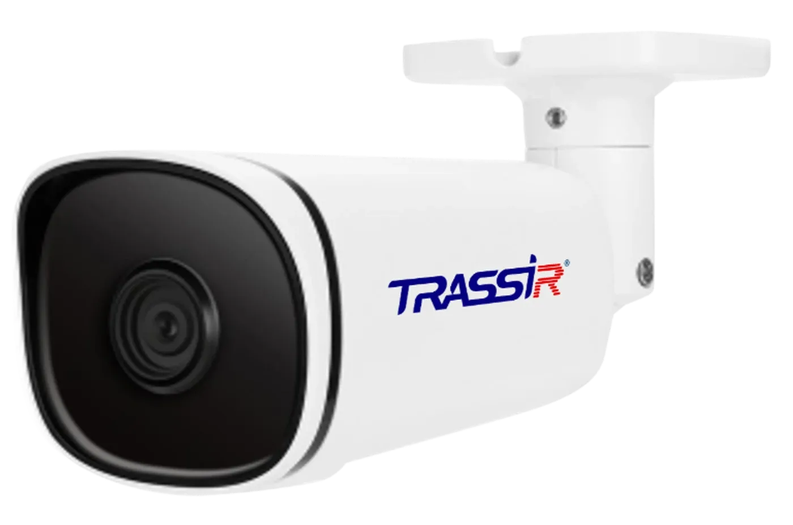
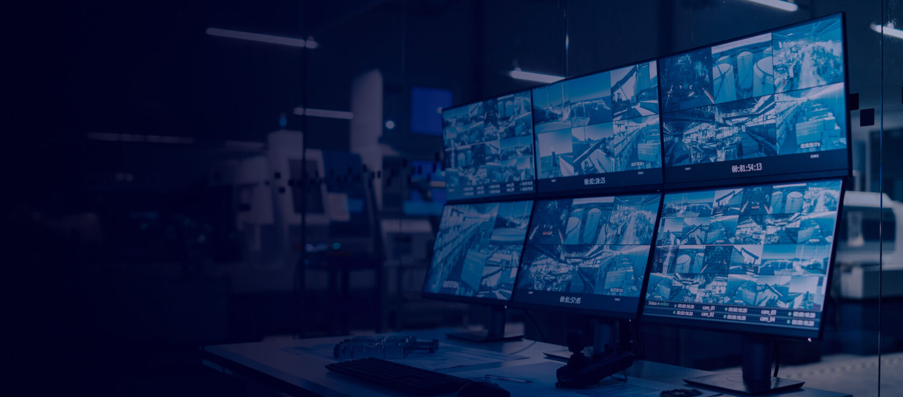
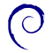
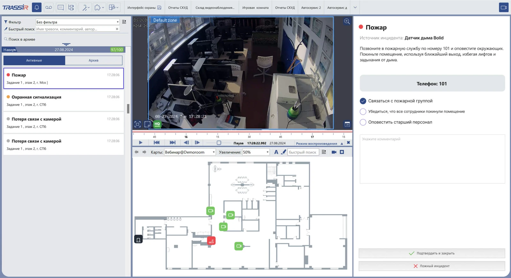
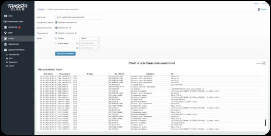
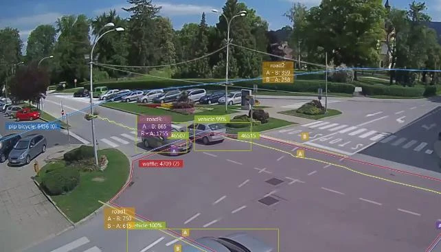

Наблюдение можно вести через любую камеру.
Камеры подключаются нативно, а также через ONVIF, RTSP, MPEG.

TRASSIR VMS
Профессиональная программа для организации видеонаблюдения
Получить консультацию
Наблюдение можно вести через любую камеру.
Камеры подключаются нативно, а также через ONVIF, RTSP, MPEG.

Подойдет любое устройство для записи видеоданных.
Windows x64

DebianРасширяйте возможности VMS под задачи проекта
TRASSIR PSIM расширяет VMS до уровня управления комплексными системами безопасности: собирает события из системы видеонаблюдения, видеоаналитики, СКУД и охранно-пожарной сигнализации в едином интерфейсе. Тревоги сортируются по приоритету, а связанные события объединяются.
Проверяйте инцидент по видео с ближайших камер и карте объекта. Оператор получает инструкцию по действиям, а система сохраняет отчёт о выполненных шагах.
Подробнее
TRASSIR CMS управляет распределённой инфраструктурой TRASSIR: объединяет серверы, камеры и пользователей. Через веб-интерфейс и мобильное приложение можно смотреть видео и архив, контролировать оборудование и получать уведомления о сбоях.
Централизованно обновляйте серверы, управляйте пользователями, сохраняйте резервные копии настроек и дублируйте архив. Cloud Connect сокращает расход трафика при ограниченной пропускной способности интернет-каналов.
Подробнее
Видеоаналитика TRASSIR добавляет интеллектуальный анализ видеопотока: распознаёт объекты, классифицирует их, отслеживает поведение и фиксирует заданные сценарии в реальном времени.
Анализ выполняется на камере, сервере или в программном обеспечении. Оператор получает тревоги, метки, отчёты и статистику вместо непрерывного просмотра видео.
Подробнее
TRASSIR VMS подходит для проектов с локализацией и импортозамещением и входит во все ключевые российские реестры:
| Функция | AnyIP | AnyIP PRO | EnterpriseIP |
|---|---|---|---|
| Подключение камер (включая ONVIF, RTSP, MPEG) | Включено | Включено | Включено |
| Профессиональный интерфейс оператора видеонаблюдения | Включено | Включено | Включено |
| Интерфейс десктопного приложения TRASSIR Client | Включено | Включено | Включено |
| Интерфейс TRASSIR Client через web-браузер | Включено | Включено | Включено |
| Использование нескольких мониторов | Включено | Включено | Включено |
| Создание шаблонов раскладок камер | Включено | Включено | Включено |
| Экспорт и поиск по архиву для быстрого просмотра | Включено | Включено | Включено |
| Управление PTZ-камерами | Включено | Включено | Включено |
Подбор оборудования
От небольшой системы до сложного проекта.
Поможем выбрать подходящее решение.